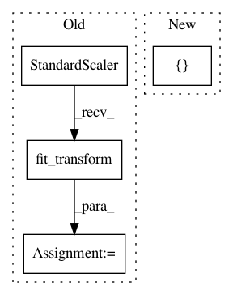

0ce5a2bed019cd81f88a1c9c4b5eaeff971383e7,tests/test_pyglmnet.py,,test_glmnet,#,137
Before Change
def test_glmnet():
Test glmnet.
scaler = StandardScaler()
n_samples, n_features = 100, 10
// coefficients
beta0 = 1. / (np.float(n_features) + 1.) * \
np.random.normal(0.0, 1.0)
beta = 1. / (np.float(n_features) + 1.) * \
np.random.normal(0.0, 1.0, (n_features,))
distrs = ["softplus", "gaussian", "poisson", "binomial", "probit"]
solvers = ["batch-gradient", "cdfast"]
score_metric = "pseudo_R2"
learning_rate = 2e-1
for solver in solvers:
for distr in distrs:
glm = GLM(distr, learning_rate=learning_rate,
solver=solver, score_metric=score_metric)
assert_true(repr(glm))
np.random.seed(glm.random_state)
X_train = np.random.normal(0.0, 1.0, [n_samples, n_features])
y_train = simulate_glm(glm.distr, beta0, beta, X_train)
X_train = scaler.fit_transform(X_train)
glm.fit(X_train, y_train)
beta_ = glm.beta_
assert_allclose(beta, beta_, atol=0.5) // check fit
After Change
from pyglmnet.pyglmnet import _loss
l_true = _loss(distr, 0., np.eye(beta.shape[0]), 0.,
X_train, y_train, 2.0, None,
np.concatenate(([beta0], beta)))
glm.fit(X_train, y_train)
assert_allclose(glm._loss[-1], l_true, rtol=1e-4, atol=1e-7)
In pattern: SUPERPATTERN
Frequency: 3
Non-data size: 4
Instances
Project Name: glm-tools/pyglmnet
Commit Name: 0ce5a2bed019cd81f88a1c9c4b5eaeff971383e7
Time: 2018-08-27
Author: mainakjas@gmail.com
File Name: tests/test_pyglmnet.py
Class Name:
Method Name: test_glmnet
Project Name: scikit-learn/scikit-learn
Commit Name: f4cd388569dca52e0af7b4a0d83cd87072be6c76
Time: 2020-07-10
Author: g.lemaitre58@gmail.com
File Name: examples/neural_networks/plot_mlp_alpha.py
Class Name:
Method Name:
Project Name: scikit-learn/scikit-learn
Commit Name: 6f33c5ccb42043c28d390f5ff08cff9317060bc8
Time: 2020-05-26
Author: jliu176@gmail.com
File Name: sklearn/neural_network/tests/test_mlp.py
Class Name:
Method Name: